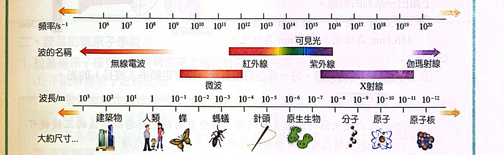
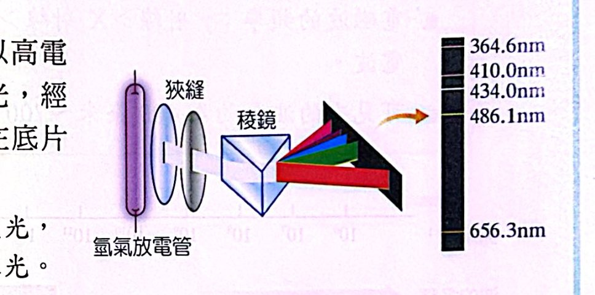
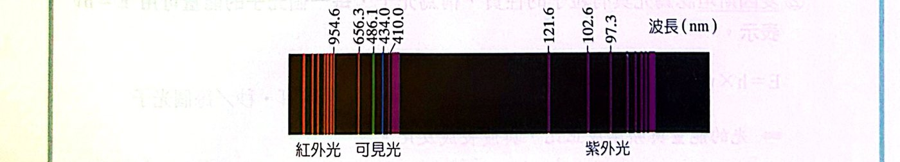
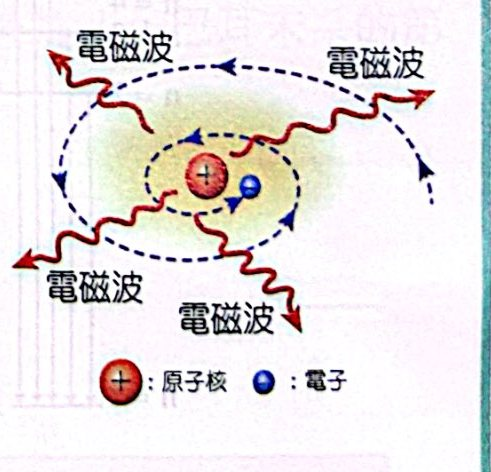
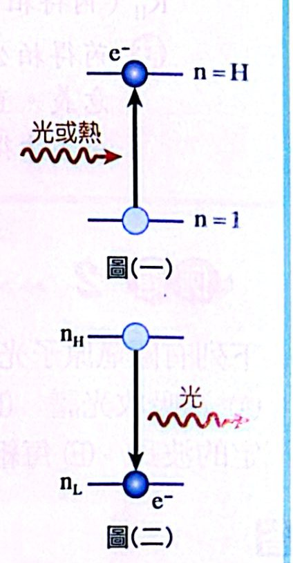
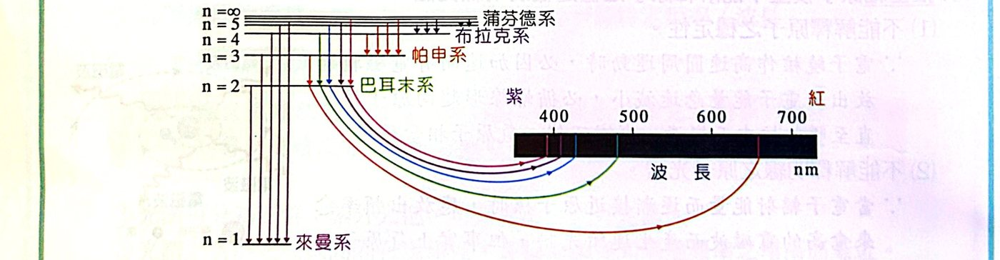
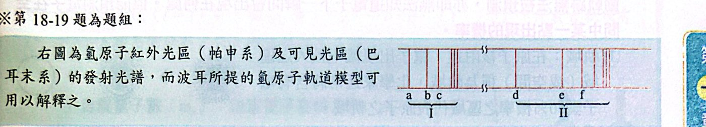
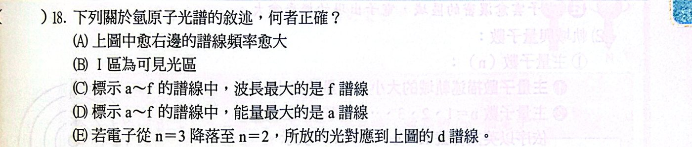

重點整理
一、氫原子光譜與芮得柏方程式
1. 電磁波與能量
(1) 光的波動性
- 光為電磁波，在真空中以 3×108 m/s 的速率前進。
- 波速 c ＝ 頻率 ν × 波長 λ （c：3×108 m/s；ν：s-1；λ：m）
- 波長常用單位：1 nm ＝ 10-9 m，1 Å ＝ 10-10 m。

電磁波譜：頻率、波長與對應尺寸
(2) 光的粒子性
- 普朗克：光的能量與頻率成正比。
- 愛因斯坦：光具有粒子性質，稱為光子，每個光子的能量 E ＝ hν。
E ＝ hν ＝ hc / λ h（普朗克常數）＝ 6.626×10-34 J·s（每個光子）
⇒ 光的能量與頻率成正比、與波長成反比。
2. 氫原子光譜
(1) 產生：放電管中充入氫氣，加高電壓，氫原子受激發後放出藍色的光，經分光儀投射在底片上，顯出一系列明線。
- 可見光區四條：410.0 nm（紫）、434.0 nm（藍）、486.1 nm（綠）、656.3 nm（紅）。

氫原子光譜的產生
(2) 特性
- 為不連續的明線光譜，每一條譜線對應一個特定頻率（波長）的光。
- 光譜可分為三群：紫外光區、可見光區、紅外光區。
- 各群譜線的間隔有規律：相鄰譜線間隔隨頻率增高而漸近（愈往高頻愈密）。

氫原子光譜：紅外光、可見光、紫外光三群譜線
3. 芮得柏方程式
- 1885 年，瑞士數學教師巴耳末找到可見光區前四條譜線的經驗公式：λ ＝ λ0 × n2/(n2−4)，λ0 ＝ 364.6 nm，n ＝ 3、4、5…
- 之後來曼（紫外光區）、帕申（紅外光區）各發現一組譜線。
- 1889 年芮得柏提出經驗公式：
1/λ ＝ RH ( 1/n12 − 1/n22 ) RH ＝ 1.097×10-2 nm-1，n2 ＞ n1（皆為正整數）
二、波耳的氫原子學說
1. 拉塞福模型的兩個困難
- 不能解釋原子的穩定性：電子繞核做圓周運動有加速度，古典物理認為會不斷輻射電磁波、能量減少，最後螺旋墜入核中──但氫原子其實很穩定。
- 不能解釋明線光譜：照古典說法，電子逐漸靠近原子核時會放出頻率連續改變的光（連續光譜），但氫原子是明線光譜。

古典理論：電子會輻射能量而墜入原子核
2. 波耳的兩個假設
波耳保留行星模型（向心力來自原子核與電子間的庫侖力），並加入兩個假設：
(1) 第一假設（穩定態、能階）
- 電子只能在某些特定半徑的圓形軌道上運動；在這些軌道上運行時不輻射也不吸收能量（穩定態）。軌道由內而外以 n ＝ 1, 2, 3… 表示。
- 每個軌道有一定能量，以「能階」表示：
En ＝ −k / n2 k ＝ 1312 kJ/mol ＝ 2.179×10-18 J／每個電子
- n ＝ 1 最靠近原子核、半徑最小、能量最低，稱為基態；n ＝ 2, 3, 4… 能量較高，稱為激發態。
(2) 第二假設（躍遷）
- 基態電子吸收能量後可躍遷到較高能階，吸收的能量等於兩能階的能量差。
- 電子由高能階 EH 躍遷到低能階 EL 時，把能量差以電磁波（光）放出 → 產生光譜。

圖（一）吸收能量躍遷；圖（二）放光
ΔE ＝ EH − EL ＝ k ( 1/nL2 − 1/nH2 )
ν ＝ ΔE/h ＝ R ( 1/nL2 − 1/nH2 )，R ＝ 3.29×1015 s-1
λ ＝ c/ν
3. 氫原子光譜系列
| 系列 |
光區 |
電子躍遷終點 |
| 來曼系 |
紫外光 |
n ＞ 1 → n ＝ 1 |
| 巴耳末系 |
可見光 |
n ＞ 2 → n ＝ 2 |
| 帕申系 |
紅外光 |
n ＞ 3 → n ＝ 3 |
（另有布拉克系 → n＝4、蒲芬德系 → n＝5，皆在紅外光區）

各系列譜線與能階躍遷
例題與類題
看答案與詳解收起
答(1) 1.0×1015 s-1 (2) 6.62×10-19 J (3) 約 399 kJ/mol
解(1) ν ＝ c/λ ＝ (3×108 m/s) ÷ (300×10-9 m) ＝ 1.0×1015 s-1
(2) E ＝ hν ＝ 6.62×10-34 × 1.0×1015 ＝ 6.62×10-19 J（一個光子）
(3) 一莫耳光子：6.62×10-19 J × 6.02×1023 ＝ 3.99×105 J ≈ 399 kJ/mol
重點：一個光子的能量乘上亞佛加厥數，才是「每莫耳」的能量。
看答案與詳解收起
答(C)
解E ＝ hc/λ，能量與波長成反比。
Ea : Eb ＝ 1/a : 1/b ＝ b : a
看答案與詳解收起
答(C)(D)
解
- (A) ✗ 是放電激發後放出的光 → 發射光譜（明線光譜），不是吸收光譜。
- (B) ✗ 彩虹是連續光譜；氫原子光譜是不連續的明線光譜。
- (C) ○
- (D) ○ 每條譜線對應一個特定的能階差 → 特定頻率（波長）。
- (E) ✗ 間隔是隨頻率增加（波長減少）而縮小，不是隨波長增加而縮小。
看答案與詳解收起
答(A)
解
- (A) ○ 第一假設：電子在特定軌道（穩定態）運動不輻射。
- (B) ✗ En ＝ −k/n2，能量與 n2 成反比（且為負值），不是與 n 成正比。
- (C) ✗ 只能吸收「剛好等於兩能階差」的能量，不能吸收任意頻率。
- (D) ✗ 這是古典物理的說法，正是波耳要否定的。
- (E) ✗ 電子在穩定軌道上不需要持續供給能量。
看答案與詳解收起
答(B)
解主量子數 n 從 1 開始（n ＝ 1, 2, 3…），沒有 n ＝ 0 的軌道；能量最低的是 n ＝ 1（基態）。
其餘 (A)(C)(D) 皆正確。
看答案與詳解收起
答(1) 1166 kJ/mol (2) 2.92×1015 s-1 (3) 10 種；紅外 3、可見 3、紫外 4 (4) 1/λ2 ＝ 1/λ1 ＋ 1/λ3
解(1) 游離能 1312 kJ/mol 就是 k。
ΔE ＝ 1312 × (1/12 − 1/32) ＝ 1312 × 8/9 ≈ 1166 kJ/mol
(2) 一個光子：1166×103 ÷ 6.02×1023 ＝ 1.94×10-18 J
ν ＝ E/h ＝ 1.94×10-18 ÷ 6.626×10-34 ≈ 2.92×1015 s-1
(3) 1 莫耳氫原子中各個原子可走不同路徑，任兩能階之間的躍遷都會出現：C(5,2) ＝ 10 種。
- 終點 n＝1（紫外）：5→1、4→1、3→1、2→1 → 4 條
- 終點 n＝2（可見）：5→2、4→2、3→2 → 3 條
- 終點 n＝3、4（紅外）：5→3、4→3、5→4 → 3 條
(4) λ1：2→1；λ2：3→1；λ3：3→2。
能量守恆：E(3→1) ＝ E(2→1) ＋ E(3→2)，且 E ＝ hc/λ
⇒ 1/λ2 ＝ 1/λ1 ＋ 1/λ3
看答案與詳解收起
答(D)
解頻率 ∝ (1/nL2 − 1/nH2)：
- (A) 1/16 − 1/49 ≈ 0.042
- (B) 1/9 − 1/64 ≈ 0.095
- (C) 1/4 − 1/25 ＝ 0.21
- (D) 1 − 1/4 ＝ 0.75（最大）
口訣：落回 n＝1 的（來曼系）能量都比其他系列大。
看答案與詳解收起
答(1) I (2) b (3) 1 : 4 (4) b (5) 1/3
解看圖判斷：同一系列的譜線往高頻率端愈來愈密，圖中兩組都往右邊變密 → 右邊頻率較高。
所以 I（左、頻率低）為巴耳末系（可見光）；II（右、頻率高）為來曼系（紫外光）。
- a ＝ 3→2、b ＝ 4→2、c ＝ 5→2；d ＝ 2→1、e ＝ 3→1、f ＝ 4→1
(1) 可見光區 → I
(2) 4→2 是巴耳末系第二條 → b
(3) Eb : Ed ＝ (1/4 − 1/16) : (1 − 1/4) ＝ 3/16 : 3/4 ＝ 1 : 4
(4) Ef − Ed ＝ E(4→1) − E(2→1) ＝ E(4→2) → 即 b 譜線
(5) 來曼系波長最大 ＝ 2→1：1/λ1 ∝ 3/4；巴耳末系波長最小 ＝ ∞→2：1/λ2 ∝ 1/4
λ1/λ2 ＝ (1/4)/(3/4) ＝ 1/3
看答案與詳解收起
答(C)
解來曼系最長波長 ＝ 2→1：1/λ ∝ (1 − 1/4) ＝ 3/4
最短波長 ＝ ∞→1：1/λ ∝ 1
λmin/λmax ＝ (3/4)/1 ⇒ λmin ＝ 3/4 × 121.5 nm ≈ 91.1 nm
單元練習
看答案與詳解收起
答(B)(C)
解波長由長到短：無線電波 ＞ 微波 ＞ 紅外線 ＞ 可見光 ＞ 紫外線 ＞ X 射線 ＞ γ 射線。
- (A) ✗ 順序顛倒。
- (B) ○ (C) ○
- (D) ✗ 顛倒。
- (E) ✗ 可見光波長比紅外光短。
看答案與詳解收起
答(A)(C)
解
- (A) ○ 廣義的「光」就是電磁波，包含 X 射線。
- (B) ✗ 波長愈長，能量愈低（E ＝ hc/λ）。
- (C) ○ 真空中所有電磁波速率都是 3×108 m/s。
- (D) ✗ 光子能量與頻率有關，不同光的光子能量不同。
- (E) ✗ 波長較長 → 頻率較小。
看答案與詳解收起
答(D)
解
- (A) ✗ 是不連續的明線光譜。
- (B) ✗ 是發射光譜。
- (C) ✗ 紫外光區、紅外光區也有譜線。
- (D) ○ 譜線往高頻方向愈來愈密。
看答案與詳解收起
答(1) 5.0×1014 s-1 (2) 約 199 kJ/mol
解(1) ν ＝ c/λ ＝ 3×108 ÷ (600×10-9) ＝ 5.0×1014 s-1
(2) 一個光子 E ＝ hν ＝ 6.62×10-34 × 5.0×1014 ＝ 3.31×10-19 J
每莫耳：3.31×10-19 × 6.02×1023 ＝ 1.99×105 J ≈ 199 kJ/mol
看答案與詳解收起
答(A)(B)(E)
解
- (A) ○ 波耳保留了行星模型。
- (B) ○ 圓周運動的向心力來自原子核與電子的庫侖吸引力。
- (C) ✗ 這是古典物理的看法，波耳假設電子在穩定軌道上不輻射。
- (D) ✗ 只能吸收特定能量（＝ 能階差）的光。
- (E) ○ 第二假設：吸收能量躍遷到高能階＝激發態。
看答案與詳解收起
答(C)(E)
解H → H+ 需 36 nu，代表基態 E1 ＝ −36 nu，En ＝ −36/n2。
基態電子能吸收的光子能量 ＝ 36(1 − 1/n2)：
- n＝2：36 × 3/4 ＝ 27
- n＝3：36 × 8/9 ＝ 32
- n＝4：33.75；n＝5：34.56…（都小於 36）
選項中 16、24、30 都不是能階差 → 不能吸收；27、32 可以 → (C)(E)。
（能量 ≥ 36 nu 可直接游離，也能吸收，但選項中沒有。）
看答案與詳解收起
答(A)
解E1 ＝ −864 au ⇒ En ＝ −864/n2
ΔE ＝ 864 × (1/22 − 1/32) ＝ 864 × 5/36 ＝ 120 au
看答案與詳解收起
答(C)
解ΔE ＝ 1312 × (1/4 − 1/9) ＝ 1312 × 5/36 ≈ 182.2 kJ/mol
每個光子：182.2×103 ÷ 6.02×1023 ≈ 3.03×10-19 J
（注意題目問「每個光子」，(A) 是每莫耳的量級。）
看答案與詳解收起
答(C)
解游離能 a ＝ E∞ − E1 ＝ 2.8×10-18 J
激發能 b ＝ E2 − E1 ＝ 2.8×10-18 × (1 − 1/4) ＝ 2.8×10-18 × 3/4
a/b ＝ 1 ÷ 3/4 ＝ 4/3 ≈ 1.33
看答案與詳解收起
答(A)
解需要 (1/nL2 − 1/nH2) 等於該係數：
- (D) R：∞→1 ✓
- (C) 3R/4：2→1 ✓
- (B) 5R/36：3→2（1/4 − 1/9 ＝ 5/36）✓
- (A) 9R/16：要 1/nL2 ≥ 9/16，只能 nL＝1，則 1/nH2 ＝ 7/16，nH 不是整數 ✗
看答案與詳解收起
答(C)
解656.3 nm 是可見光區中波長最長（能量最低）的譜線 → 巴耳末系第一條：n＝3 → n＝2。
驗算（用圖1）：E3 − E2 ＝ −146 − (−328) ＝ 182 kJ/mol
λ ＝ hcNA/E ＝ (6.62×10-34 × 3×108 × 6.02×1023) ÷ 182000 ≈ 6.57×10-7 m ≈ 657 nm ✓
看答案與詳解收起
答(C)
解λ1/λ2 ＝ 1/4 ⇒ E1/E2 ＝ 4
E1（2→1）∝ 1 − 1/4 ＝ 3/4 ⇒ E2 ∝ 3/16
1/4 − 1/n2 ＝ 3/16 ⇒ 1/n2 ＝ 1/16 ⇒ n ＝ 4
看答案與詳解收起
答(D)
解ν(4→2) ＝ R(1/4 − 1/16) ＝ 3R/16 ＝ ν
ν(2→1) ＝ R(1 − 1/4) ＝ 3R/4 ＝ 4 × (3R/16) ＝ 4ν
看答案與詳解收起
答(B)
解波長最短 ＝ 能量最大，比較 (1/nL2 − 1/nH2)：
- (A) 4→2：3/16 ≈ 0.19
- (B) 3→1：8/9 ≈ 0.89
- (C) 4→3：7/144 ≈ 0.05
- (D) 3→2：5/36 ≈ 0.14
- (E) 2→1：3/4 ＝ 0.75
看答案與詳解收起
答(A)
解① 吸收 94.91 nm：1/λ ＝ RH(1 − 1/n2)
1/94.91 ＝ 0.010536 ＝ 0.01097 × (1 − 1/n2) ⇒ 1 − 1/n2 ≈ 0.960 ⇒ n ＝ 5
② 放出 1282 nm：1/1282 ＝ 7.80×10-4 ＝ 0.01097 × (1/m2 − 1/25) ⇒ 1/m2 ≈ 0.111 ⇒ m ＝ 3（帕申系 5→3）
③ 第二個光子 3→1：1/λ ＝ 0.01097 × (1 − 1/9) ＝ 9.75×10-3 ⇒ λ ≈ 102.6 nm，落在 95～120 之間。
看答案與詳解收起
答(B)
解能量守恆（E ＝ hν，ν 可直接相加）：吸收的 ＝ 放出兩個的和
3×1015 ＝ 1×1014 ＋ ν ⇒ ν ＝ 2.9×1015 s-1
看答案與詳解收起
答(E)
解1/λ 的範圍：1/15000 ～ 1/6000 nm-1 ＝ 6.7×10-5 ～ 1.67×10-4 nm-1
除以 RH（1.0×10-2）：(1/n12 − 1/n22) 要在 0.0067 ～ 0.0167 之間。
- (A) 0.75 (B) 0.139 (C) 0.049 (D) 1/16 − 1/25 ＝ 0.0225
- (E) 1/25 − 1/36 ＝ 0.0122 ✓（λ ≈ 8200 nm）


看答案與詳解收起
答(A)(E)
解譜線往右愈來愈密 → 右邊頻率較高。I（左）是帕申系（紅外），II（右）是巴耳末系（可見）。
- (A) ○ 愈右邊頻率愈大。
- (B) ✗ I 是紅外光區。
- (C) ✗ 波長最大的是頻率最小的 a。
- (D) ✗ 能量最大的是 f。
- (E) ○ 3→2 是巴耳末系第一條（能量最低）＝ II 區最左的 d。
看答案與詳解收起
答(A)
解I 區是帕申系（終點 n＝3），a＝4→3、b＝5→3、c＝6→3。
E ＝ 1312 × (1/9 − 1/36) ＝ 1312 × 3/36 ＝ 1312 × 1/12 kJ/mol
看答案與詳解收起
答(D)
解由 n＝4 往下共 C(4,2) ＝ 6 條：
- 終點 n＝1（紫外）：4→1、3→1、2→1 → 3 條
- 終點 n＝2（可見）：4→2、3→2 → 2 條
- 終點 n＝3（紅外）：4→3 → 1 條
看答案與詳解收起
答(B)
解紫外光區最低能量：2→1，E ∝ 3/4 ＝ 27/36
可見光區最低能量：3→2，E ∝ 5/36
波長比 ＝ 能量反比 ＝ (5/36) : (27/36) ＝ 5 : 27
看答案與詳解收起
答(A)(B)(D)(E)
解λ1：2→1；λ2：3→1；λ3：3→2。能量：E2 ＝ E1 ＋ E3。
- (A) ○
- (B) ○ E ＝ hν，頻率也可相加。
- (C) ✗ 波長不能直接相加，應該是 1/λ2 ＝ 1/λ1 ＋ 1/λ3。
- (D) ○ 1/λ2 ＝ (λ1＋λ3)/(λ1λ3) ⇒ λ1λ3 ＝ λ2λ3 ＋ λ1λ2
- (E) ○ ν2 − ν1 ＝ ν3（3→2，5/36）；ν2 − ν3 ＝ ν1（2→1，3/4）；ν3 ＜ ν1 成立。
看答案與詳解收起
答(1) 丙 (2) 約 6.23×1014 s-1
解(1) 巴耳末系往短波長端變密，所以最右邊孤立的「丁」是波長最長的 3→2，往左依序：X＝4→2、丙＝5→2、乙＝6→2、甲＝7→2。
(2) ΔE ＝ 2.2×10-18 × (1/4 − 1/16) ＝ 2.2×10-18 × 3/16 ＝ 4.125×10-19 J
ν ＝ ΔE/h ＝ 4.125×10-19 ÷ 6.62×10-34 ≈ 6.23×1014 s-1